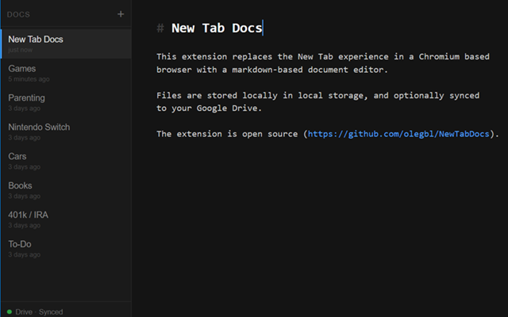

Markdown notes on every new tab, synced to Google Drive.

Live syntax highlighting for headings, bold, italic, code, and links.
Keep as many notes as you like, sorted by last edited.
Notes are saved to local storage as you type. No sync required.
Optionally sync your notes to your own Google Drive with conflict resolution.
Ctrl+click any URL or markdown link to open it in a new tab.
Drive connection persists across browser restarts and auto-refreshes.